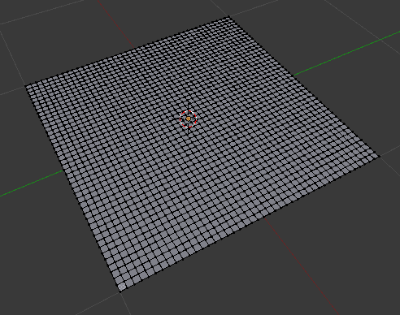
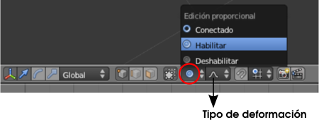
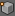
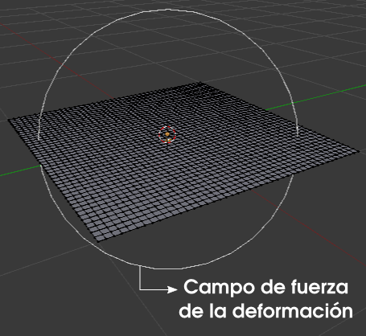
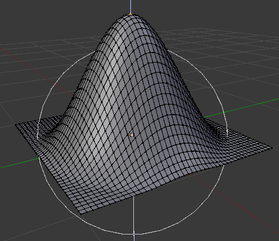
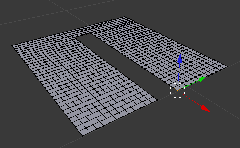
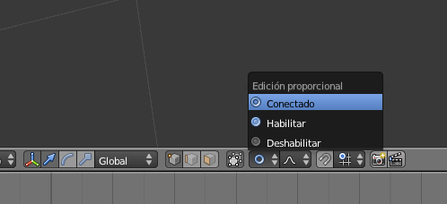
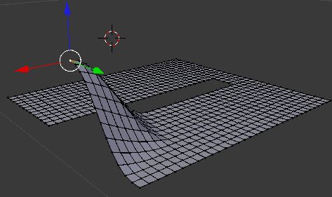

Deformación proporcional
¿Cuántas veces se nos ha pasado por la mente lo bueno que sería desplazar un vértice y que los contiguos sufran un desplazamiento en función de la proximidad?. Eso es una deformación proporcional en la que a nivel interno Blender puede aplicar gran variedad de fórmulas matemáticas y así conseguir que el estiramiento quede más picudo, redondeado...
Partamos de un plano (Añadir/Malla/Plano) al que le hemos aplicado unas cuantas subdivisiones.
Ahora vamos a activar la deformación proporcional en la hilera de iconos del editor Vista 3D tal y como indica en la imagen siguiente. Al optar por Habilitar aparece al lado un nuevo icono representativo del tipo de deformación.
Seleccionamos uno de los vértices  de la zona central y activamos el desplazamiento con la tecla "G". Inmediatamente aparece una novedad: un campo de fuerza para la deformación.
Si desplazamos hacia arriba "Z" (se supone que la orden "G" ya estaba dada) y se hace evidente el efecto de deformación proporcional.
Impresionante sin duda. Algunas cosas que debemos tener en cuenta sobre esta edición:
- Ya hemos mencionado que hay varios tipos de deformación. El icono correspondiente suele ser bastante informativo.
- El radio del campo de deformación se puede editar en tiempo real con la rueda del ratón.
- Es muy importante acostumbrarse a desactivar esta herramienta cuando terminemos de usarla.
Posibles situaciones extrañas
Al comenzar la edición no aparece la circunferencia del campo de fuerza.
El motivo es que la última vez que usamos esta herramienta salimos de ella dejando esta circunferencia a un tamaño que ahora no vemos. La solución es girar la rueda para aumentar su tamaño. También es posible que la dejáramos tan grande que tampoco alcancemos a verla; en este caso la solución es tratar de disminuir el tamaño de la misma manera.
Es por eso que se recomienda salir de esta edición preocupándonos de no originar este problema.
En Modo Objeto  , al mover un elemento se mueven los demás.
, al mover un elemento se mueven los demás.
Aunque este tipo de recurso es más habitual del Modo Edición  también se puede usar en Modo Objeto
también se puede usar en Modo Objeto  . En el caso que nos ocupa está claro que estamos originando que al mover un objeto los demás se desplacen porque hemos accionado la deformación proporcional. No puede ser un descuido, como por ejemplo haberla dejado olvidada desde Modo Edición
. En el caso que nos ocupa está claro que estamos originando que al mover un objeto los demás se desplacen porque hemos accionado la deformación proporcional. No puede ser un descuido, como por ejemplo haberla dejado olvidada desde Modo Edición  , porque son independientes.
, porque son independientes.
Deformación proporcional conectada
Hay una opción de rango superior que hace que Blender distinga vértices enlazados y se respete esta condición. Por ejemplo en este caso.
Queremos desplazar el vértice seleccionado pero no deseamos que los vértices que no están conectados sufran deformación. Debemos activar un nuevo modo de deformación; donde antes escogimos Habilitar, ahora optamos por Conectado.
A partir de ahí no hay diferencia con la deformación proporcional que ya hemos estudiado salvo el resultado.
